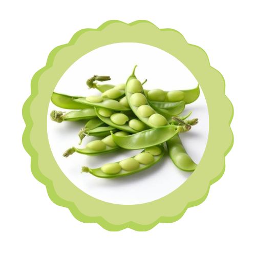

CHILE HABANERO
Tipo de Iluminacion: Luz solar directa
Nombre en griego: Capsicum chinense
Origen: América del sur
Uso: Debido a sus distintas propiedades, el chile habanero se utiliza en diversos rubros, como la gastronomía.
Ciclos:
Es una planta de ciclo anual. El color de los chiles es verde cuando son tiernos, y, al madurar, pueden ser anaranjados, amarillos, rojos o cafés.
Dato curioso: El sabor picante proviene de la capsaicina, que es la sustancia responsable del picor. Según la concentración de esta, se determina el nivel de picor del chile.
ACELGA
Tipo de Iluminacion: Luz solar directa
Nombre en griego: Beta vulgaris
Origen: Región del Mediterráneo y las Islas Canarias.
Uso:
Como alimento, es una hortaliza de hoja verde con beneficiosas propiedades nutricionales, rica en vitamina A, folatos, potasio, magnesio, hierro, entre otros nutrientes.
Ciclos:
La acelga es una planta de clima templado que se desarrolla bien con temperaturas medias. Los cambios bruscos de temperatura resultan bastante perjudiciales.
Dato curioso: Su color puede variar entre verde y rojo.
LECHUGA ESCAROLA
Tipo de Iluminacion: Luz solar directa
Nombre en griego: cichorium endivia
Origen: Es originario de Oriente.
Uso: La escarola es muy habitual en las dietas. Es la mejor de los diferentes tipos de lechuga para luchar contra la retención de líquidos, no produce hinchazón abdominal ni gases, es fácilmente digerible, depurativa y diurética.
Ciclos: Responde bien en días cortos. Las escarolas maduran en un periodo de 85 a 98 días, dependiendo de la variedad.
Dato curioso: Los egipcios ya la cultivaban hace más de 4000 años.
APIO
Tipo de Iluminacion: Luz solar directa
Nombre en griego: Apium graveolens
Origen: Es oriundo de la zona mediterránea.
Uso: Se puede ingerir crudo, cocido o en jugo. Además de su crujiente textura y sabor, es una verdura equilibrante.
Ciclos: Su ciclo transcurre entre los 110 y 125 días.
Dato curioso: En la Antigua Grecia se usaba como premio en los juegos.
EPAZOTE
Tipo de Iluminacion: Sol y media sombra.
Nombre en griego: Dysphania ambrosioides
Origen: es originaria de america y era conocida y utilizada por los mexicas en mexico bajo el nombre nahuatl de "epazotl" que viene de "patl" hierba fetida y "izotl" dulce lo cual se refiere al olor tan fuerte y dulzon que tiene esta hierba.
Uso: Sopas, jugos
Ciclos: Bianual
Dato curioso: En la Antigua Grecia se usaba como premio en los juegos.
JITOMATE
Tipo de Iluminacion: Luz solar directa
Nombre en griego: Lycopersicon lycopersicum
Origen: Es originario de la región andina de Sudamérica, que incluye Perú, Ecuador, Colombia y el norte de Chile.
Uso:
El jitomate es esencial en salsas, sopas y ensaladas. Rico en licopeno, favorece la salud cardiovascular y de la piel, y se utiliza en cosméticos y fertilizantes.
Ciclos:
El ciclo del jitomate comienza con la germinación, seguida de crecimiento, floración, maduración y cosecha en 60 a 90 días.
Dato curioso: El jitomate originalmente era amarillo o verde y se consideraba venenoso hasta que se descubrió que era comestible.
CEMPASUCHIL
Tipo de Iluminacion: Luz solar directa
Nombre en griego: ATagetes erecta
Origen:
El cempasúchil es originario de México y América Central.
Uso:
El cempasúchil se utiliza en decoraciones, especialmente en el Día de Muertos, y en remedios tradicionales.
Ciclos: El ciclo del cempasúchil comienza con la siembra de la semilla, luego crece, florece y, finalmente, se cosech.
Dato curioso:
El cempasúchil se conoce como "flor de los muertos" en México, ya que se cree que su color brillante guía a los espíritus durante el Día de Muertos.
MENTAS
Tipo de Iluminacion: luz filtrada.
Nombre en griego: Mentha
Origen:
La menta es originaria de Europa, Asia y el norte de África.
Uso: La menta se usa en infusiones, como condimento en alimentos, en productos cosméticos y para aliviar dolores de cabeza o digestivos.
Ciclos: El ciclo de la menta comienza con la siembra, sigue con el crecimiento, floración y, finalmente, la cosecha en 2 a 3 meses.
Dato curioso: La menta se utilizaba en la antigua Grecia como símbolo de bienvenida y en baños para refrescarse.
CALABAZA
Tipo de Iluminacion: Luz solar directa
Nombre en griego: Cucurbita
Origen:
La calabaza es originaria de América, específicamente de Mesoamérica.
Uso: La calabaza se usa en sopas, guisos, postres y como decoración, especialmente en Halloween.
Ciclos: El ciclo de la calabaza comienza con la siembra, seguida de crecimiento, floración, fructificación y cosecha en 3 a 4 meses.
Dato curioso: ELa calabaza fue cultivada por civilizaciones prehispánicas como los aztecas y mayas, quienes la usaban tanto como alimento como recipiente.
ALBERJON
tipo de iluminacion luz solar piluminación
Nombre en científico: Lupinus angustifolius
Origen: es una planta que se ha cultivado desde la antigüedad, especialmente en el Mediterráneo, y es conocida por sus semillas comestibles, que son grandes y de forma plana.
Uso: se usa en la alimentación (sopas, guisos, panes), mejora el suelo al fijar nitrógeno, se utiliza como forraje para animales y tiene propiedades digestivas y antioxidantes.
Ciclos: El ciclo del alberjón incluye la germinación, el crecimiento, el florecimiento, la fructificación y la cosecha, y dura entre 6 y 8 meses.
Dato curioso:
Un dato curioso sobre el alberjón es que es una de las legumbres más antiguas cultivadas por el ser humano, con evidencias de su uso desde hace más de 6,000 años.

HABAS
tipo de iluminacion luz solar directa
Nombre en científico: Vicia faba
Origen: se originaron en el Mediterráneo oriental y el suroeste de Asia hace más de 8.000 años
Uso:
Las habas se usan como alimento por su alto contenido en proteínas y versatilidad, además de haber tenido usos religiosos y simbólicos en la antigüedad.
Ciclos: Las habas se siembran en otoño o primavera, germinan en 7-14 días y se cosechan en 4-6 meses. Prefieren climas frescos.
Dato curioso: En la antigua Roma, las habas se usaban para alejar espíritus en rituales.
CHAMPIÑONES
tipo de iluminacion luz solar directa
Nombre en científico: Agaricus bisporus
Origen:
Los champiñones son originarios de Europa
Uso:
Los champiñones se usan en la cocina para enriquecer platos, como guisos, ensaladas, sopas y salsas, debido a su sabor.
Ciclos: El ciclo de los champiñones dura 4-6 semanas: se inoculan esporas, el micelio crece, aparecen los primordios y se cosechan cuando alcanzan el tamaño adecuado.
Dato curioso:
Los champiñones son uno de los pocos alimentos vegetales que contienen vitamina D de manera natural, especialmente cuando se exponen.
SETAS
tipo de iluminacion luz solar directa
Nombre en científico: Fungi
Origen: especialmente de Asia y Europa.
Uso: Las setas se utilizan en la cocina para preparar sopas, guisos, ensaladas y salsas, además de ser valoradas por su sabor umami y beneficios nutricionales.
Ciclos: El ciclo de las setas incluye la inoculación de esporas, la colonización del sustrato por el micelio, la fructificación con la aparición de primordios y la cosecha de setas maduras en 4 a 6 semanas.
Dato curioso:
Algunas setas, como el hongo bioluminiscente , brillan en la oscuridad debido a una reacción química natural llamada bioluminiscencia.
BERRO
Nombre en científico: Nasturtium officinale
Origen: Es originario de Europa y Asia Occidental. Crece de forma silvestre en arroyos, ríos y zonas húmedas
Uso: El berro se utiliza principalmente en ensaladas, sopas y sándwiches debido a su sabor picante y fresco.
Ciclos: El ciclo del berro incluye la siembra en primavera, germinación en 7-14 días, crecimiento en 4-6 semanas y cosecha cuando las hojas son tiernas. El ciclo total dura entre 4 y 6 semanas.
Dato curioso:
El berro es una de las plantas más antiguas cultivadas por el ser humano y se dice que Cleopatra lo usaba para mantener su piel saludable.
BETABEL
Nombre en científico: Beta vulgaris
Origen:
El betabel es originario de la región del Mediterráneo
Uso:
El betabel se utiliza en ensaladas, jugos, sopas y como ingrediente en platos cocidos, debido a su sabor dulce y propiedades nutritivas.
Ciclos:
El ciclo del betabel incluye la siembra en primavera, germinación en 7-14 días, crecimiento durante 2-4 meses, y cosecha cuando las raíces alcancen el tamaño adecuado.
Dato curioso:
El betabel tiene un alto contenido de nitratos, lo que puede mejorar el rendimiento deportivo al aumentar el flujo sanguíneo y la oxigenación de los músculos.
BROCOLI
Nombre en científico: Brassica oleracea
Origen:
El brócoli es originario de la región del Mediterráneo, específicamente de Italia, y fue cultivado por primera vez en el Imperio Romano
Uso: El brócoli se utiliza en ensaladas, sopas, guisos, al vapor o como acompañamiento en platos principales.
Ciclos: Se siembra en primavera, germina en 7-14 días, crece durante 3-4 meses y se cosecha cuando la cabeza está compacta.
Dato curioso: El brócoli es rico en vitamina C y antioxidantes, y ayuda a reducir el riesgo de ciertos tipos de cáncer.
PUERROS
Nombre en científico: Allium porrum.
Origen: El puerro es originario del Mediterráneo y ha sido cultivado desde la antigua Grecia y Roma.
Uso: Se utiliza en sopas, guisos, ensaladas y como acompañamiento por su sabor suave y propiedades nutritivas.
Ciclos: Se siembra en primavera, germina en 10-14 días, crece durante 4-6 meses, y se cosecha cuando las plantas tienen tallos gruesos y largos.
Dato curioso: Los puercos eran muy valorados por los romanos y egipcios, quienes los consideraban un símbolo de buena salud y longevidad.
COL DE BRUSELAS
Nombre en científico: Brassica oleracea var. gemmifera
Origen: es originaria de Bélgica.
Uso: Se utiliza en ensaladas, guisos, al vapor o asada, siendo rico en vitaminas y fibra.
Ciclos: Se siembra en primavera, germina en 7-14 días, crece durante 4-6 meses y se cosecha cuando los brotes están firmes y de color verde brillante.
Dato curioso: as coles de Bruselas fueron cultivadas por primera vez en Bélgica en el siglo XVI y se popularizaron en Europa.